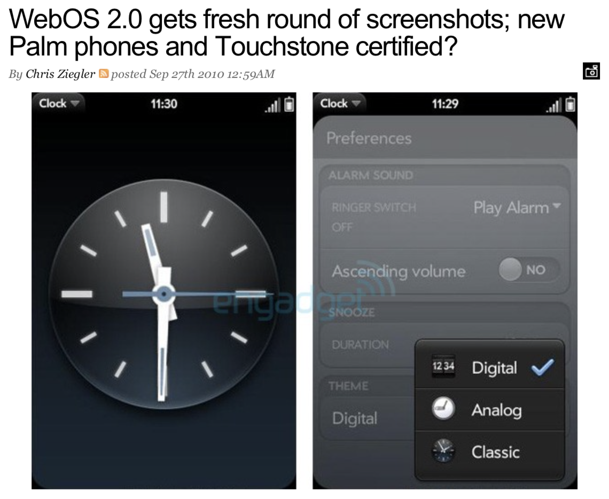
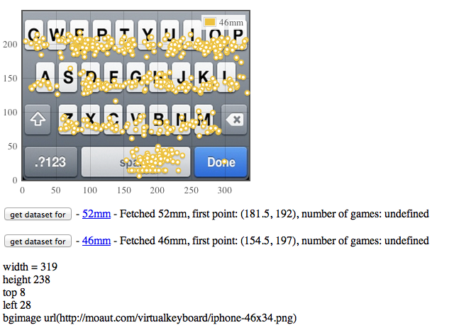
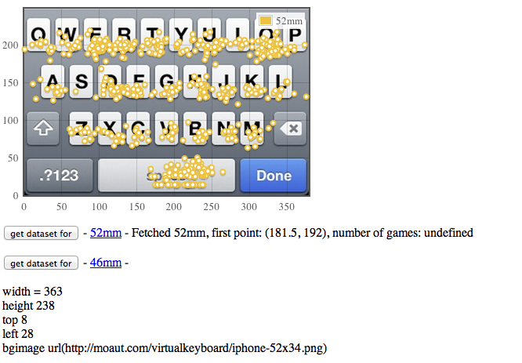
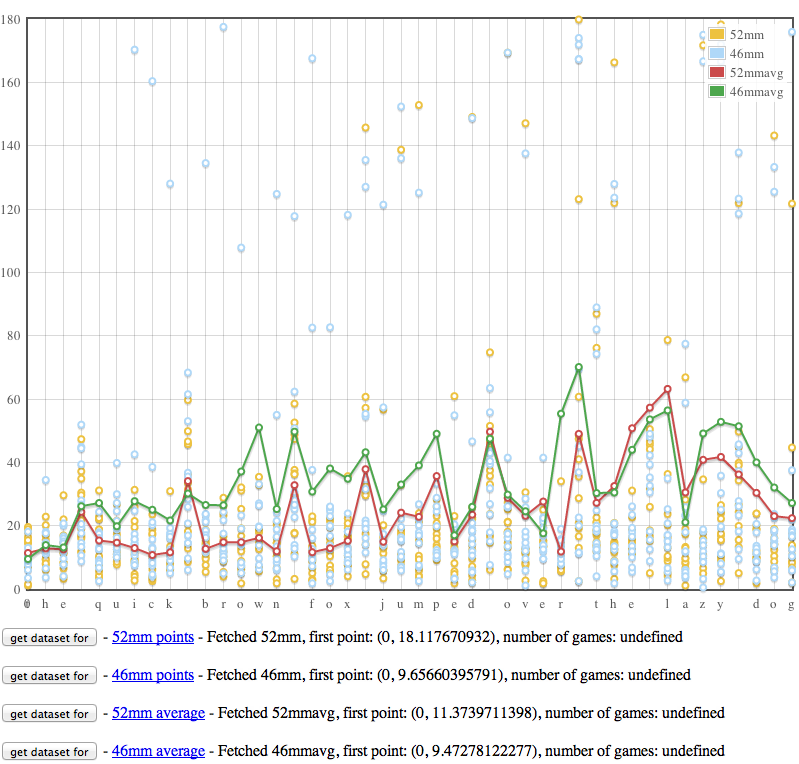

I joined palm in 2008 to join a team developing what would become the Palm Pre. A completely new phone design with a system UI based on a card metaphor. The phone had a 320x240 lcd and a slide out keyboard. The applications were developed using HTML, CSS and Javascript connected to back end services written in Java. Software features included multi touch, multitasking, notifications and synergy.
My principle role as an engineer on the human interface or HI team was to work closely with our visual and UX designers to implement the UI of core applications. Our engineering team was focused on pixel perfect implementation as well as developing best practices for app development.
Pre, Pre Plus, Pre 2, Pre 3, Pixi, and Veer smartphones and the TouchPad tablet.
I helped to invent, prototype and implement:
Interactive Notifications
Early notification system had no allowance for interaction aside from swipe to delete or tap to open. I created the first notifications with additional capabilities such as send a message and call or text a response.
Layered Notifications
Another pitfall in early notification design was primitive handling of multiple notifications from the same app or contact. If a user called or messaged multiple times a long list of notifications would appear in the notification drawer. I created and implemented the first method to coalesce notifications by contact or app into stacks the user could swipe through to delete and review or tap to open the thread in the app.
Clock App

During a demonstration to our CEO it was discovered that we intended to release the Palm Pre without a clock application. At this point it was clear that we would not be releasing a phone without a clock app with the minimum of a stopwatch, alarms and timer. A designer, myself and one other engineer were tasked with quickly creating a full featured clock app.
Multiselect
I helped design, prototype and implement the first version of webOS multiselect. I created a photo app connected to the instagram api and implemented a novel method of multiselect.
Chinese character pinyin input
In my free time I developed a webOS paint app, someone from the localization team noticed it and asked if I thought it could be used to develop a pinyin software keyboard. It could, so we adapted my code to work as a pinyin input method.
Minimum virtual keyboard size
The HI team needed to know definitively the minimum screen size that could support an on screen keyboard given the average user. I created a prototype to collect and measure the accuracy of entry for three different screens and the existing product screen as a baseline. A large sample set of was collected from a pool of Palm Pre users. I created a companion webapp to compare the inherent limitions in accuracy of the screens sizes. This tool was as a last minute sanity check in the choice of display panels for a future device.



MY ROLE
TECH
- Palm Pre
- Palm Pixi
- Palm Veer
- Java
- Javascript
- NodeJS